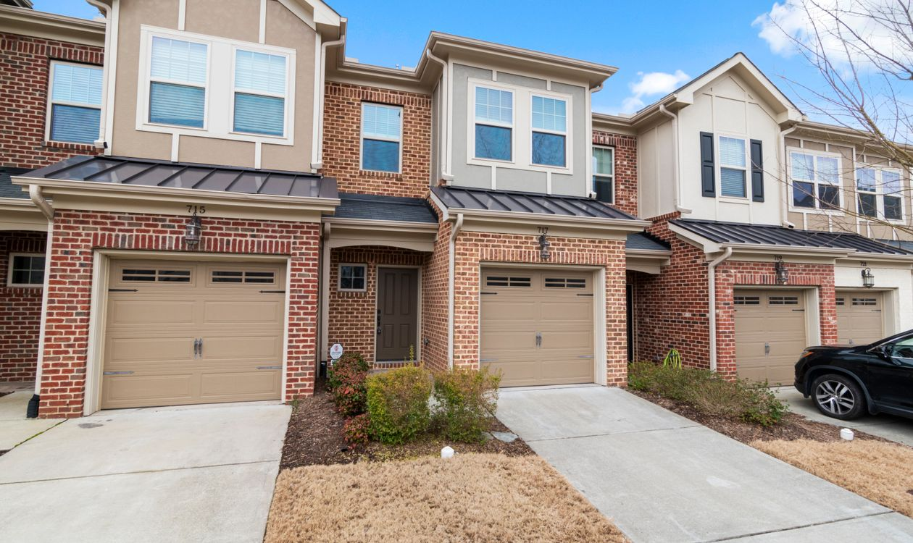

Land transfer tax is the closing cost that catches buyers off guard most often, because it is large, it is due in full on closing day, and it cannot be rolled into a mortgage the way many buyers expect. Knowing how the tax is calculated before you write an offer changes how you budget for the whole purchase, and it is one of the first numbers Real Estate Lawyers Hamilton buyers work with at Estofa Law will confirm for you in writing before you commit.
Ontario charges land transfer tax on a sliding scale based on the purchase price. The first portion of the price is taxed at half a percent, the next portions at one percent and one and a half percent, and the portion above 400,000 dollars at two percent. On a 700,000 dollar home the provincial tax works out to roughly 10,475 dollars. It is a meaningful sum, and it sits on top of your down payment, legal fees and disbursements, so it belongs in your budget from day one rather than the week before closing.
Buyers purchasing inside the City of Toronto pay a second, municipal land transfer tax at similar rates, which roughly doubles the total. Buyers outside Toronto pay only the provincial tax. This difference is one reason two homes at the same price can carry very different closing costs, and why your lawyer's estimate should always be specific to the property you are actually buying.
The tax is paid on the day the transfer is registered, which is your closing day. In practice your lawyer collects it from you as part of the closing funds you deliver before closing, and pays it during registration. You never pay it directly to the seller, and it is never part of the deposit. If a deal does not close, no transfer is registered and no tax is payable on that transaction.
First time buyers can claim a rebate of up to 4,000 dollars against the Ontario tax, and Toronto offers a matching municipal rebate for its own tax. To qualify you must be at least 18, must never have owned a home anywhere in the world, and your spouse must not have owned a home while you were spouses. The rebate is usually applied right at registration, which means it reduces the amount you hand over at closing rather than coming back to you later. Claiming it incorrectly can create a reassessment with interest, so the declaration behind it should be prepared carefully.
The buyer pays land transfer tax, not the seller. Certain transfers are exempt, most commonly transfers between spouses, and some transfers into family trusts or between affiliated corporations, but ordinary purchases between unrelated parties are fully taxable. New construction homes also attract the tax on the purchase price, in addition to HST considerations that resale homes do not have, which makes the closing estimate for a new build especially important to review early.
Land transfer tax is a predictable cost once you know the price and the location. Calculate it before you offer, confirm whether the first time buyer rebate applies to you, and make sure your closing funds include it. A written estimate from your lawyer removes the guesswork entirely.